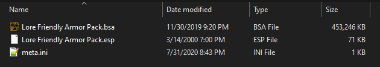

Creating a Separator in Mod Organizer 2
- Right-click in the left pane of MO2 and select Create Separator
- Input Equipment into the pop-up and select OK
IMPORTANT NOTE:
You must install all of the following mods and keep them active in MO2 (with the original plugins hidden) in order for the weapon/armor packs to work
PKM
Install normally
Hide the following:
- PKM.esp
- Hides the .esp for the mod because the guide will provide a merged .esp for all the following weapon mods that balances/fixes/renames them and gives them proper leveled list integration to make them fully fit the vanilla style
- Custom-made PKM heavy machine gun with custom sounds
M37 Ithaca
Install normally
Hide the following:
- M37Ithaca.esp
- Custom made pump-action shotgun, complete with mods
Camon Pack Complete
Install normally
Hide the following:
- CamonPack - Blachnick - Scottmack.esp
- CamonPack - Blachnick.esp
- Lore friendly weapon pack based on vanilla assets, but only a few weapons will be used (Broomhandle Carbine, Merc Carbine, and M2A1 Carbine)
Plasma Boomstick
Files to install normally:
- Main File - Plasma Boomstick - Update 2
Hide the following:
- PlasmaBoomstick.esp
- Custom-made Plasma Shotgun with custom sounds
Homemade Chechen rebel SMG
Install normally
Hide the following:
- HomemadeSMG.esp
- Scratch-made sub-machine gun with a homemade feel
Lore Friendly Weapons Pack
Install normally
- Changes many aspects of the previous weapons to perfectly fit in with the vanilla game such as balancing/renaming/removing certain aspects/proper leveled list integration
NOTE: Make sure you have all of the previous weapon mods installed and active with the plugins hidden in MO2
Lore Friendly Weapons Pack - Iron Sights Recoil Animations Patch
Install normally
- Only needed if you installed Iron Sights Recoil Animations from Gameplay - Mechanics
Cloud Grenades
Install normally
- Craftable grenades based off the toxic cloud from Dead Money
The Z-43 Hazard Immolation Device
Install normally
- Unique version of the Heavy Incinerator which can be acquired at Big Mountain
Spice of Life
Install normally
Hide the following:
- 1nivVSLArmors.esp
- Adds many new armors/clothing to the wasteland to add some much needed variety
Spice of Life - Vanilla Body Patch
Installation Instructions:
- During installation, expand the Spice of Life Vanilla folder
- Right-click on the Complete BSA folder and select Set data directory
- Makes the Spice of Life armors work with vanilla armors
Tammer's Armor and Clothing Pack
Install normally
Hide the following:
- Tammer's NIF-Bashed Armor and Outfits Pack.esm
- Lore-friendly armor/clothing pack based on vanilla armors
NCR Trooper Overhaul
Files to install normally:
- Main File - Main File Beta 7_2
- Update File - Sapper Leg Fix
- Optional File - Vanilla Body Patch
Hide the following:
- NCRTrooperOverhaul.esp
- Completely re-works and adds new NCR armors based on concept art
NCR Trooper Overhaul Distributed
Install normally
Hide the following:
- TrooperOverhaul-Dragbody.esp
Installation instructions:
- Move the Vanilla Body Patch from the previous mod below the file from this mod
- Distributes the new armors to leveled lists and adds new variants to the casual ranger outfits
Lore Friendly Armor Pack
Installation instructions:
- Install the file normally
- Once installed, right-click on Spice of Life - Vanilla Body Patch in the left pane of MO2 and select open in explorer
- Right-click on 1nivVSLArmors.bsa and select Copy
- Close out of that window, then right click on Lore Friendly Armor Pack in the left pane of MO2
- Paste the .BSA into the folder, right-click on it, and select Rename
- Name the .BSA Lore Friendly Armor Pack.bsa 
- The .BSA must be named exactly that in order for it to work
- Changes many aspects of the previous armors to perfectly fit in with the vanilla game such as balancing/renaming/removing certain aspects/proper leveled list integration
NOTE: Make sure you have all of the previous armor mods installed and active with the plugins hidden in MO2